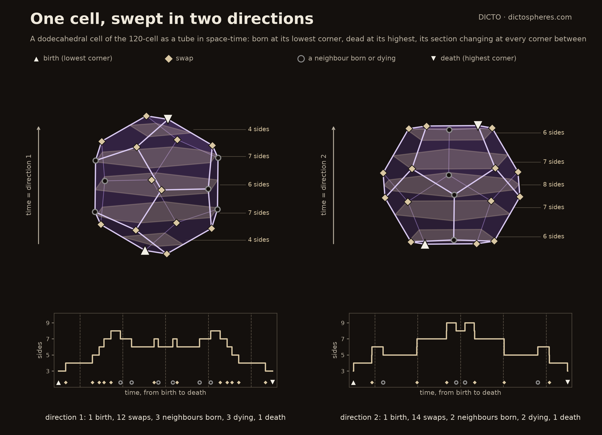

Births, swaps and deaths counted in every direction
Abstract. When the cells of a sheet of tissue, a froth or any flat tiling move against each other, they are born, swap neighbours and die. Stack the moving tiling in time and every cell becomes a tube in space-time; a cell that swaps neighbours on the way is a scutoid. We prove that the count of these events does not depend on which direction is called time. Let an open region of three-dimensional space-time be filled by a simple face-to-face complex of convex polytopes, and sweep it by parallel planes in any generic direction (Theorem 1). Then the tiling seen in the plane changes only at the corners of the complex, by a birth, a swap or a death according to how many of the corner's four edges lie below the plane; each cell is born at its lowest corner and dies at its highest; and, per unit volume of a large region, births = deaths = cells and swaps = corners − 2 × cells, in every generic direction. Hence swaps per birth = ⟨F⟩/2 − 3, where ⟨F⟩ is the mean number of walls of a cell. This carries DICTO's reading of the scutoid tissue as a slice of a four-dimensional polytope (#104, where the counts are the h-vector) from the closed polytope to open space-time. Exact cases: the swept 120-cell, truncated 120-cell and bitruncated 600-cell (116 / 366 / 116, 716 / 966 / 716, 716 / 2166 / 716), the bcc tessellation (4 swaps per birth) and the Poisson–Voronoi tessellation (24π²/35 − 2 = 4.7677, simulated 4.7669 ± 0.0006). Without convexity the counts can depend on the direction, and on the Sun's granulation they do. No natural system has yet given a swap count that passes its checks; the one check that could, swaps per birth against ⟨F⟩/2 − 3 in a public three-dimensional grain map swept by planes, is the open lead.
Cells that crowd and move must trade neighbours. How many trades must there be, for each cell that appears?
In a flat tiling where three cells meet at every junction, only three things can happen at one place and one moment. A three-sided cell can appear at a junction (a birth), a three-sided cell can shrink to a junction and vanish (a death), or two cells that touch can pull apart while the two cells beside them come into contact (a swap; T1 in foam physics, the 2-2 move in geometry). Euler's formula fixes the net number of cells, but it does not see swaps: a swap leaves the numbers of cells, edges and junctions unchanged. So in a flat tiling alone the number of swaps per birth is free.
Gómez-Gálvez et al. found that epithelial cells between two curved surfaces swap neighbours between the top and the bottom of the sheet, and named the solid such a cell fills a scutoid [1]; Mughal et al. found scutoids in a soap froth between curved plates [2]. DICTO's paper #104 read a tissue as the moving slice of a four-dimensional polytope: a generic sweep of a simple 4-polytope by parallel hyperplanes shows a tiling of the slice whose cells are born, swap and die, h1, h2 and h3 times, the entries of the polytope's h-vector, the same in every direction [3, Theorems 1 and 2].
Here the polytope is replaced by space-time itself. A moving flat tiling, stacked in time, fills a slab of three-dimensional space-time with tubes; a plane at a fixed time shows the tiling at that moment, and a tilted plane shows a mixture of places and times. DICTO proposed slicing space-time at a tilt: if the count of swaps belongs to the geometry of the tubes, it should not care which direction is time. Theorem 1 says when that is so, and what the count is. DICTO frames the work as a ladder whose rungs run from exact geometry, through random tilings and models, to measured natural systems; Sections 4 to 6 are the rungs that stand, and Section 7 the ones that do not yet.
Think of every cell as a tube in space-time. A cell is born at the lowest point of its tube and dies at the highest; every other corner of the tube is a moment when its neighbours change. Counting corners and tubes gives the number of swaps, and the count is the same whichever way time runs.
Setting. A simple complex is a locally finite face-to-face tiling of a region of three-dimensional space-time (x, y, t) by convex polytopes, the cells, in which every edge lies on exactly three cells and every corner on exactly four cells and four edges. Their common faces are walls. A linear function h is generic for the complex if no two corners have the same value and h is constant on no edge. The planes h = c, swept upwards, meet the complex in a tiling of the plane; the index of a corner is the number of its four edges along which h decreases from the corner. For a region R of space-time, write C(R) for the number of cells with a corner in R, K(R) for the number of corners in R, and B(R), S(R), D(R) for the births, swaps and deaths that the sweep shows inside R.
Theorem 1 (convex cells: births, swaps and deaths in every direction; proved in general). Let an open region of space-time be filled by a simple complex of convex cells, and let h be generic.
swaps per birth = S / B = ⟨F⟩/2 − 3,
where ⟨F⟩ is the mean number of walls of a cell per period.
Corollary 1 (large regions). Let R1, R2, … be regions in which the share of cells with corners both inside and outside Rn tends to 0. Then in every generic direction B(Rn)/C(Rn) and D(Rn)/C(Rn) tend to 1, and if the mean number of walls of the cells meeting Rn tends to ⟨F⟩, swaps per birth tends to ⟨F⟩/2 − 3. For a stationary random complex of convex cells, such as the Poisson–Voronoi tessellation of space-time, ⟨F⟩ is the mean number of walls of the typical cell.
Speed. Space and time carry different units, so "tilting" needs a speed v that turns time into length. A change of v is the linear map (x, y, t) ↦ (x, y, v t) of space-time. It maps planes to planes, convex cells to convex cells and corners to corners, so it only relabels the generic directions: the counts of Theorem 1 do not depend on v.
The hypothesis. Convexity is used once, in part (b): a generic linear function on a convex polytope has one lowest point, and it is a corner. A cell that is not convex can have two lowest points in some direction; the plane then shows it born as two pieces that later join, and the count of births depends on the direction. This happens in practice. Seeds of a flat Voronoi tiling moving on straight lines trace tubes whose walls are ruled, not flat: at a time-like plane they show no births or deaths at all, while at a tilt of 45 degrees births and deaths are 13 to 20% of the swaps [4]. The granules of the Sun are not convex in space-time either (Section 7). Simplicity is used in part (a): with five or more cells at a corner the events need not be single births, swaps or deaths (#104 Lemma 5: the rosettes of the truncated 600-cell [3]).
Everything happens at the corners. Around a corner four tubes meet like four slices of a cake; which of them the moving plane meets first decides whether a cell is born, two pairs swap, or a cell dies.
Lemma 1 (the corner). At a corner p of a simple complex, each of the four cells contains exactly three of the four edges at p, a different three for each cell, and its tangent cone at p is spanned by those three edges.
Proof. A small sphere round p is tiled by the traces of the four cells, with one vertex for each edge at p and one arc for each wall at p. Each edge lies on three cells, so three arcs meet at each of the four vertices, and there are 4 · 3 / 2 = 6 arcs. Euler's formula on the sphere, 4 − 6 + 4 = 2, holds, and the four regions have 2 · 6 = 12 sides in all; each region has at least three sides, so each is a triangle. A triangle on the four vertices omits one vertex, and two regions cannot omit the same vertex (they would be the same triangle). So cell Cj holds every edge except ej. The tangent cone of a convex polytope at a vertex is spanned by its edges there. □
Proof of Theorem 1(a). Number the edges at a corner p so that e1, …, ei go down. If i = 0, every cone of Lemma 1 lies in the half-space above p, and the points just below p lie in no cell, which is impossible inside the region; i = 4 likewise. If i = 1, just below p the plane meets only e1 near p, a junction of the three cells holding e1; the cone of C1 is spanned by e2, e3, e4, all going up, so just above p the plane cuts C1 in a small triangle: a birth. If i = 2, just below p the plane cuts e1 and e2 and the wall they span, which is the wall of the two cells holding both, C3 and C4: so C3 and C4 touch and C1 and C2 do not. Just above, the plane cuts e3, e4 and the wall of C1 and C2: the pairs have swapped. If i = 3, reverse the case i = 1: a death. Between corner levels the plane crosses every edge it meets at one point (h is constant on no edge), each cell's section is a convex polygon whose corners move along the cell's edges, and no edge begins or ends: the tiling keeps its pattern. □
Proof of (b). A generic linear function on a convex polytope takes its least value at a single point, and that point is a corner (the basic fact of linear programming). At the lowest corner p of cell Cj its three edges go up; by (a) the index cannot be 0, so the fourth edge ej goes down: the index is 1 and Cj is the cell born there. Conversely, at a corner of index 1 with ej going down, all three edges of Cj go up, so p is a local and therefore, by convexity, the global lowest point of Cj. Each cell has exactly one lowest corner and each corner of index 1 is the lowest corner of exactly one cell; the same holds for index 3 and highest corners. Every corner in R has index 1, 2 or 3, which gives S(R). □
Proof of (c). A cell with all its corners in R has its lowest corner in R in every direction; a cell with no corner in R has it in R in none. Only cells with corners on both sides can count in one direction and not in another, and each changes B, D by at most 1 and S = K − B − D by at most 2. □
Proof of (d) and Corollary 1. In a period every cell has one lowest and one highest corner, so B = D = C and S = K − 2C. Each cell is a simple polytope (three edges at each of its corners, Lemma 1); one with F walls has 2F − 4 corners (Euler's formula with 3Kcell = 2Ecell), and each corner lies on four cells. So 4K = Σ(2F − 4) over the cells of a period, K/C = ⟨F⟩/2 − 1, and S/B = K/C − 2 = ⟨F⟩/2 − 3. For Corollary 1 apply (b) and (c) to Rn: the cells counted in one direction and not in another are a vanishing share of C(Rn), and the same counting of corners per cell holds up to the cells at the boundary. □
Closed version. On the boundary of a simple 4-polytope, the same corner argument gives #104 Theorem 1, and there the two extreme corners have index 0 and 4: the sweep starts and ends with a tetrahedral section, so births = deaths = f3 − 4 (four cells are present from the start and four at the end) and swaps = f0 − 2f3 + 6 [3]. The −4 and +6 are the closed sphere's correction to B = C and S = K − 2C.
The theorem gives the number of swaps from the shape of the cells alone. Three families show it exactly.
Swept 4-polytopes [3, Theorem 2]. The 120-cell has 116 births, 366 swaps and 116 deaths; the truncated 120-cell 716, 966, 716; the bitruncated 600-cell 716, 2166, 716. An event logger built for real data, given the sweeps as sequences of tilings, returns exactly these counts in two directions [5], and in three further directions [4]. Figure 1 follows one dodecahedral cell of the 120-cell through two sweeps. It is born at its lowest corner and dies at its highest in both. Between them its section gains a side at every corner where one of its own edges lies below the plane and loses one where two do. The split of its 18 other corners into swaps (12 in one direction, 14 in the other) and births or deaths of neighbours changes with the direction; the totals over the whole polytope (1, 116, 366, 116, 1 corners of index 0 to 4) do not.

The bcc tessellation. The Voronoi cells of the body-centred cubic lattice are truncated octahedra, with 14 walls, and the tessellation is simple. Theorem 1(d) gives 14/2 − 3 = 4 swaps per birth in every generic direction; a sweep of a perturbed copy gives exactly 4 [6].
Poisson–Voronoi. The typical cell of the three-dimensional Poisson–Voronoi tessellation has 96π²/35 corners on average [7, 8], so 2 + 48π²/35 walls, and Corollary 1 gives 24π²/35 − 2 = 4.7677 swaps per birth. A plane section of a Voronoi tessellation is a Laguerre (power) tessellation [9], and the section moving through time is a flat power diagram whose weights change linearly; so this is the swap count of such a moving tiling. Simulation: 4.7669 ± 0.0006 [6]. Its closed counterpart, a random simple 4-polytope with n cells, rises towards the same value from below (4.76291 at n = 300000) [6]. In 15 space-time Poisson–Voronoi blocks, swept in 15 directions each, no corner of index 0 or 4 occurred in any of the 225 block-directions, births and deaths lay within the bound of part (c) in every block, and swaps varied over the directions by at most 2.7% [4].
In a solid tiling the swap comes apart: a pair of cells loses its contact at one moment and another pair gains one at another.
For a moving three-dimensional tiling, read as a section of a four-dimensional complex, the same corner argument shows single events only: a birth, one contact gained, one contact lost, or a death (#104 Theorem 1′, for simple polytopes of every dimension d ≥ 4 [3]). Toy moving foams (Voronoi and power diagrams, three generic motions) gave 30,758 contact changes with none simultaneous at a time floor of 1e-9, and a lattice control was caught [10]. That is a computation on these motions, not a proof for moving foams in general.
Before a count is asked of nature, the counting must return the right answer where the answer is known.
The event logger used for every count below returns the #104 counts exactly (Section 4) and checks Euler's formula, triple junctions and the balance of events in every frame, with a negative control in every run [5]. A three-dimensional grain-growth model reaches a steady mean of 13.65 to 13.85 walls per grain, beside the value 13.766 of Mason et al. for the steady state of grain growth [11, 12]; this is the ⟨F⟩ on which the open lead of Section 7 rests.
No natural tiling has yet given a swap count that survives its own checks. Each line says where a system stands, in its study's own words.
Cells in a moving tiling cannot trade neighbours freely. If their tubes in space-time are convex, the number of trades for each cell that appears is fixed by how many neighbours a tube has, and it is the same whichever direction is taken as time.
Theorem 1 carries #104 from the boundary of a four-dimensional polytope to open space-time: births = deaths = cells and swaps = corners − 2 × cells per volume, so swaps per birth = ⟨F⟩/2 − 3, in every generic direction and at every speed scale. The swept polytopes, the bcc tessellation and Poisson–Voronoi show it exactly. The hypothesis is sharp in practice: cells that are not convex in space-time, such as moving Voronoi cells and the Sun's granules, give counts that depend on the direction. The rungs that stand are geometry, one contact at a time, and exact reference values; no natural rung stands yet. The grain-map check of Section 7 is the next one to climb.
Claimed here, not found in the sources checked. Theorem 1 (parts b to d: births and deaths at the lowest and highest corners of convex cells, swaps = corners − 2 × cells in every generic direction of an open or periodic simple complex, the boundary bound, swaps per birth = ⟨F⟩/2 − 3) and Corollary 1; Lemma 1 as used; the reading of the bcc and Poisson–Voronoi values as swap counts of moving tilings; Figure 1.
Known and used. The index of a corner in a sweep and the h-vector counts of simple polytopes (classical: McMullen's proof of the Dehn–Sommerville relations by line shellings; read as a scutoid tissue in #104 [3]); part (a) is the corner argument of #104 Theorem 1, applied to a complex instead of a polytope boundary; the unique lowest vertex of a generic linear function on a convex polytope; Euler's formula; Banchoff's critical points of height functions on polyhedra [21]; the mean number of corners of the typical Poisson–Voronoi cell (Meijering [7]; Møller [8]); sections of Voronoi tessellations as Laguerre tessellations [9]; ⟨F⟩ = 13.766 for grain growth [12].
Sources checked (20 November 2026; the raw record is data/sources-checked.md in this paper's folder). Read in full or in the relevant sections: Gusakova, Kabluchko and Thäle, Sectional Voronoi tessellations (arXiv:2301.03297; full text searched for moving sections, sweeps and topological changes: none; the known mean values of sectional Poisson–Voronoi tessellations are credited to Miles 1984 and Chiu, van de Weygaert and Stoyan 1996); De Leo, Topology of plane sections of periodic polyhedra (arXiv:math/0502219; Banchoff's critical points on a periodic polyhedral surface, index sum equal to the Euler characteristic per period: the same kind of count for a surface, not for the events of a tiling of cells); Redenbach and Jung, Random tessellations: an overview of models (arXiv:2501.05166; mean value relations of normal tessellations in R³ after Mecke and Radecke; no sweep); Mughal, Cox, Weaire, Burke and Hutzler [2] (full); Gómez-Gálvez et al. [1] (searched for Euler, births and intercalations: Voronoi models of the apical and basal surfaces, no count of swaps per birth); Gómez-Gálvez et al., A quantitative biophysical principle to explain the 3D cellular connectivity in curved epithelia (author manuscript; the mean number of apico-basal intercalations per cell is measured, not related to the number of walls); Mason, Lazar, MacPherson and Srolovitz [12] (the sections on ⟨F⟩ and cross-sections); Ferraro and Zaninetti, arXiv:1110.2337 (lengths and areas of plane sections of Voronoi tessellations; no events). Seen only as a title, abstract or reference: Meijering 1953 and Miles 1970 (no free copy found; values used as standard and confirmed by simulation [6]); Møller 1989 (abstract record); Miles 1984, Sectional Voronoi tessellations; Chiu, van de Weygaert and Stoyan 1996; Radecke 1980; Banchoff 1967 and 1970; Guibas and co-workers on the kinetic Voronoi diagram (bounds on the number of changes of moving Voronoi diagrams; no per-birth count). Our reference library (full-text index and catalogue, searched by meaning for: planar sections of a random 3D Voronoi tessellation; mean number of vertices of the typical Poisson–Voronoi cell; sweeping a polytope by a moving hyperplane; neighbour exchange counts in moving tilings; Laguerre sections of Voronoi tessellations; Euler relations of normal tessellations): catalogue entries on Poisson–Laguerre tessellations and Voronoi parallelohedra, none on sweeps or event counts. Web searches: sectional Poisson–Voronoi mean values; T1 events of a plane swept through a 3D Voronoi tessellation; Banchoff critical points and sweeps; Meijering 1953; Møller 1989; scutoids in soap froth; serial-section topological events of 3D grain maps (found the Surface Evolver count of switching events per vanishing grain, a time evolution, not a sweep); kinetic power diagrams; mean value relations of normal tessellations; apico-basal intercalations per cell. None states the count of births, swaps and deaths of a plane sweep of a convex simple tessellation, or swaps per birth = ⟨F⟩/2 − 3. Each ingredient is classical; the claim is the combination.
| result | status | where |
|---|---|---|
| Theorem 1: births = deaths = cells, swaps = corners − 2 × cells, swaps per birth = ⟨F⟩/2 − 3, every generic direction, convex simple cells | proved | §§2–3 |
| Closed version: h1, h2, h3 of a simple 4-polytope (#104 Theorems 1, 2) | proved [3] | §3 |
| 120-cell, truncated 120-cell, bitruncated 600-cell: 116 / 366 / 116, 716 / 966 / 716, 716 / 2166 / 716 | exact; logger agrees | §4, Fig. 1 |
| bcc: 4 swaps per birth | exact | §4 |
| Poisson–Voronoi: 24π²/35 − 2 = 4.7677; simulated 4.7669 ± 0.0006 | exact; simulation agrees | §4 |
| Space-time Poisson–Voronoi blocks: no corner of index 0 or 4; boundary bound holds; swaps within 2.7% over directions | computed, consistent | §4 |
| Moving three-dimensional foams: one contact at a time (30,758 events) | computed, consistent | §5 |
| Grain-growth model: ⟨F⟩ 13.65 to 13.85 against 13.766 | computed, consistent | §6 |
| Grain map swept by planes against ⟨F⟩/2 − 3 | open lead | §7 |
| Sun: tilts, swap rate at step 0, net change, net against displacement, lineages | NOT CONFIRMED | §7 |
| Earth plates; clouds; froth | NOT CONFIRMED | §7 |
Every number in this paper is taken from the study named at its reference and checked by scripts/audit.py in this paper's folder, which reads the study data and texts and fails on any number it cannot match. Figure 1: scripts/fig_tube.py (Python 3 with NumPy, SciPy and Matplotlib), whose 20 checks are written to data/fig-tube.json.
DICTO · dictospheres.com